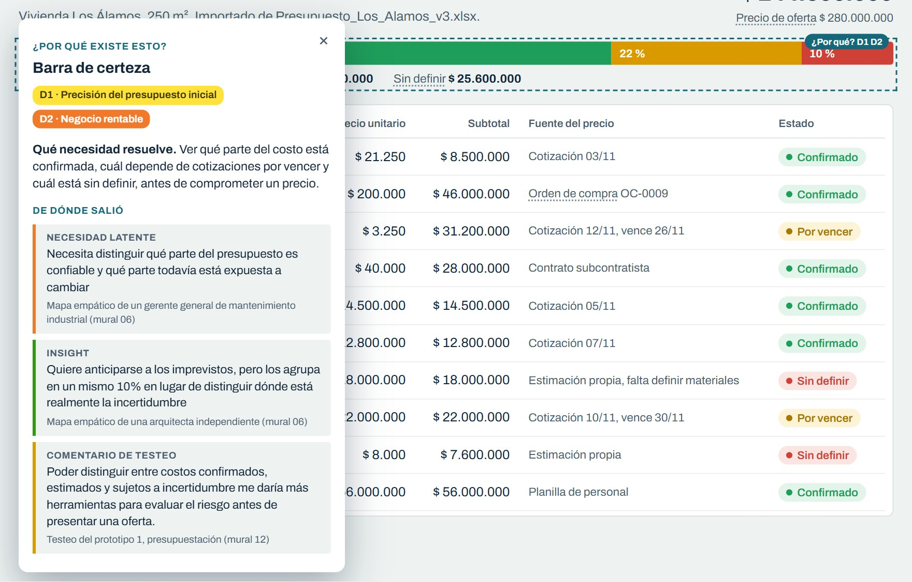
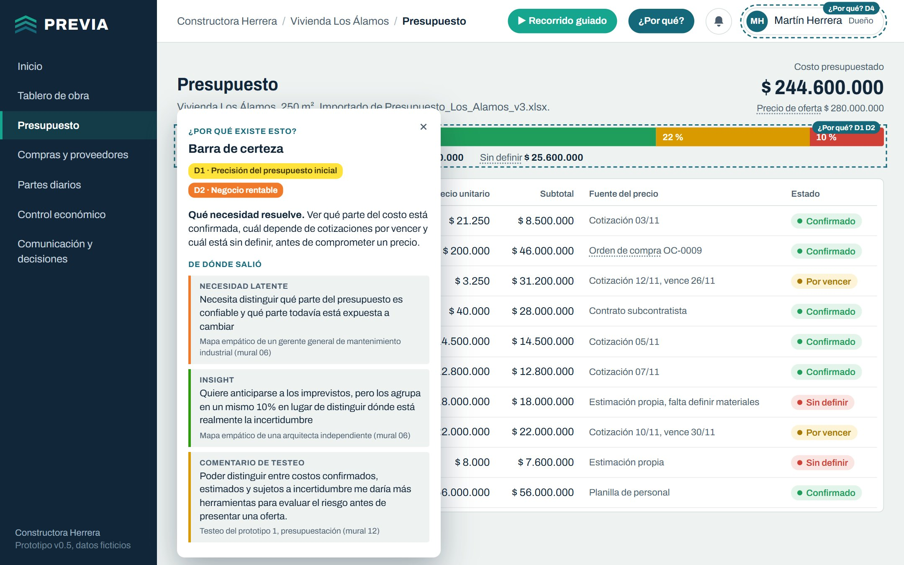
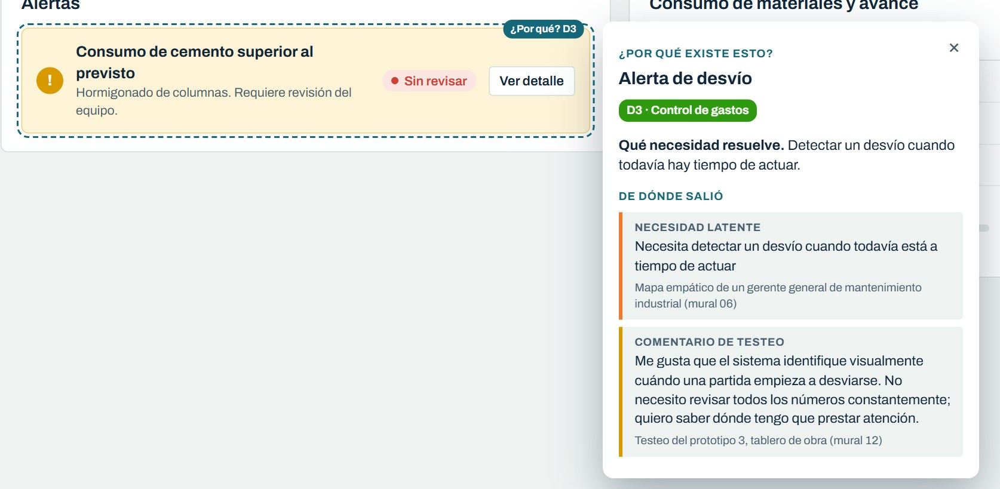
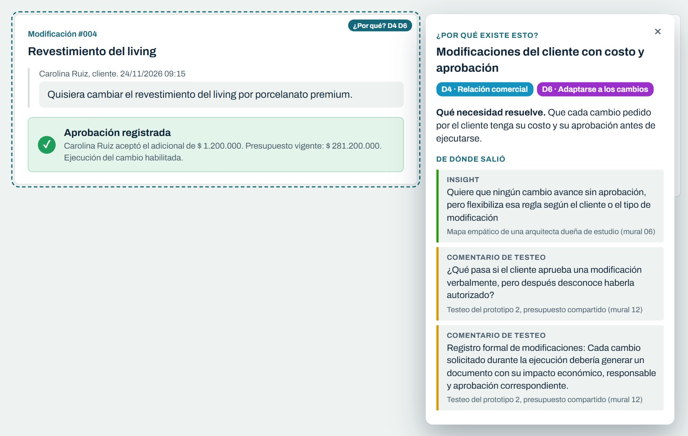

Necesita distinguir qué parte del presupuesto es confiable y qué parte todavía está expuesta a cambiar

Construimos PREVIA con lo que dijeron 10 entrevistados y los 109 comentarios de testeo de nuestros tres prototipos. Con el modo «¿Por qué?» encendido, cada parte de la pantalla muestra qué necesidad resuelve y de qué entrevista o testeo salió.

Como en un presupuesto de obra, cada partida dice cuánto hicimos y en qué se usó dentro de PREVIA. Los números salen de nuestros murales.
| Hito | Partida | Cantidad | En PREVIA se usó para |
|---|---|---|---|
| Hito 2 | Resignificación del desafío | 41resignificaciones | Identificar a los actores que aparecen en el prototipo: dueño, cliente, proveedores y contratistas. |
| Hito 3 | Dimensiones del desafío | 7dimensiones | Las etiquetas D1 a D7 que acompañan cada función. |
| Hito 4 | Perfiles | 10perfiles | Las vistas por rol, incluida la del cliente como segundo actor. |
| Hitos 5 y 6 | Protocolo e indagación en terreno | 10entrevistas | La voz de constructoras, estudios y desarrolladores detrás de cada decisión. |
| Hito 7 | Mapas empáticos | 115necesidades latentes e insights | La necesidad que resuelve cada función del modo «¿Por qué?». |
| Hito 8 | Punto de vista | 1tensión central | El objetivo de PREVIA: gestionar la incertidumbre, no prometer eliminarla. |
| Hito 9 | Ideación | 220ideas, aprox. | El repertorio del que salieron las funciones. |
| Hitos 10 y 11 | Conceptos por dimensión e integrados | 21 + 3conceptos | Los tres prototipos que salimos a testear. |
| Hitos 12 y 13 | Prototipos y testeo | 109comentarios | Qué quedó, qué cambió y qué se sumó en la versión final. |
| Hito 14 | PREVIA, prototipo final | 15funciones con su porqué | 5 roles, 7 escenas y un recorrido guiado, navegable y sin cuenta. |
A la izquierda, lo que salió del trabajo de campo y de los testeos. A la derecha, la función de PREVIA que lo resuelve, con su explicación abierta.
Necesita distinguir qué parte del presupuesto es confiable y qué parte todavía está expuesta a cambiar

¿Qué hace concretamente el sistema cuando detecta un problema, además de mostrarme una alerta?

¿Qué pasa si el cliente aprueba una modificación verbalmente, pero después desconoce haberla autorizado?
